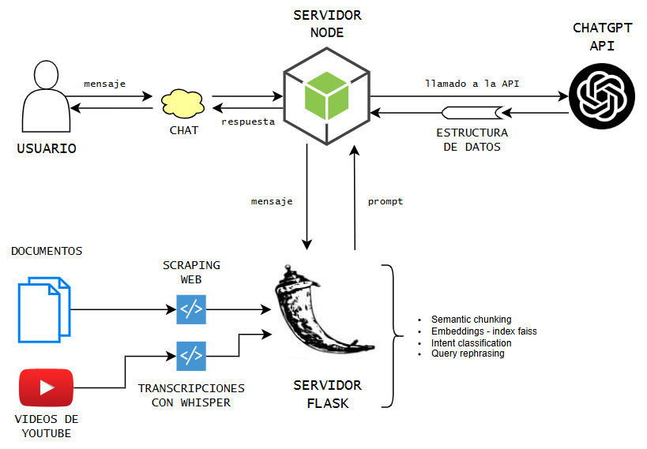
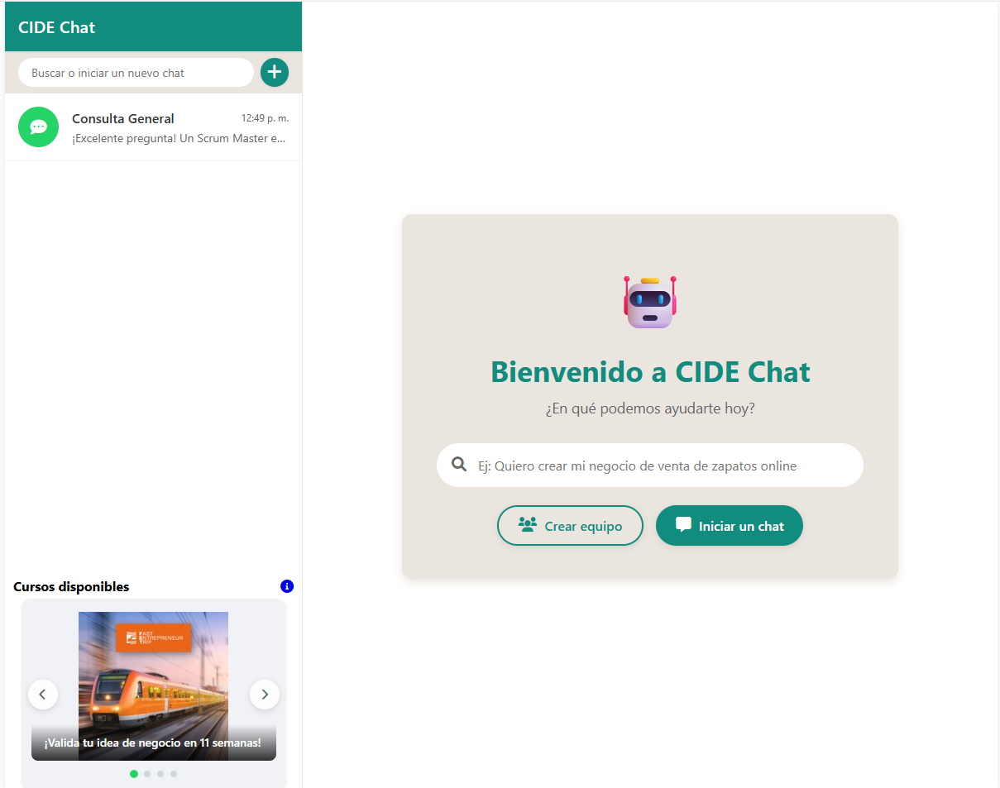
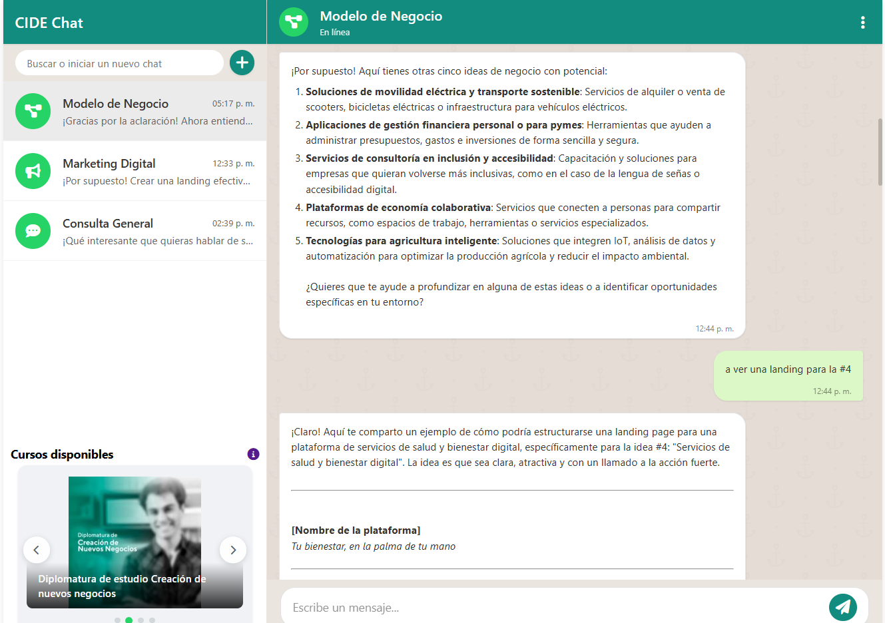
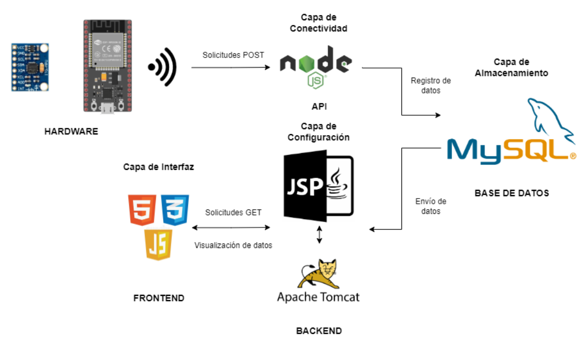
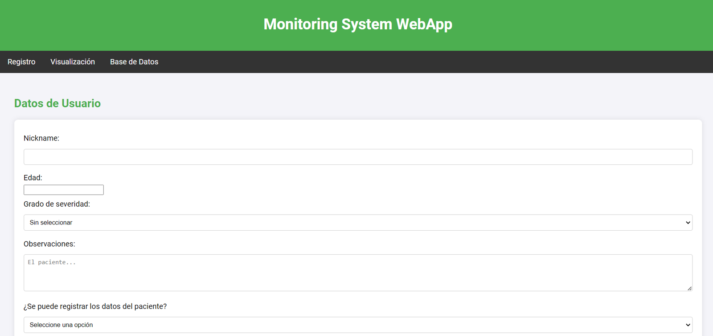
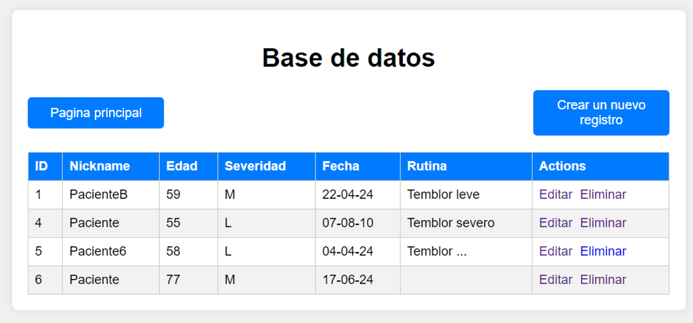

César Gutiérrez Flores
Bachiller en Ingeniería Electrónica apasionado por la tecnología y la innovación.
Tengo experiencia en desarrollo de software, sistemas embebidos e Internet of Things (IoT).
Busco una oportunidad para aplicar mis conocimientos y habilidades en proyectos desafiantes aportando a su equipo.

🏫 CIDE PUCP
Desarrollé un chatbot de emprendimiento con un LLM + sistema RAG. Hice uso de técnicas relacionadas con IA generativa como web scraping, chunking semántico, embedding de datos, llamadas a API de OpenAI, entre otras.
Componentes
- Interfaz de usuario inspirada en WhatsApp Web
- Servidor web con Node.js y Express.js
- Servidor RAG con Python y Flask



🏫 Laboratorio LIBRA PUCP
Estuve encargado del desarrollo del software de monitoreo de temblores de manos en pacientes de Parkinson utilizando sensores y microcontroladores.
Equipo
- Erick Toque
- Rosa Silva
- Sebastián Vila
Publicaciones


Formación Complementaria
Contacto
+ Sobre mí
En construcción...